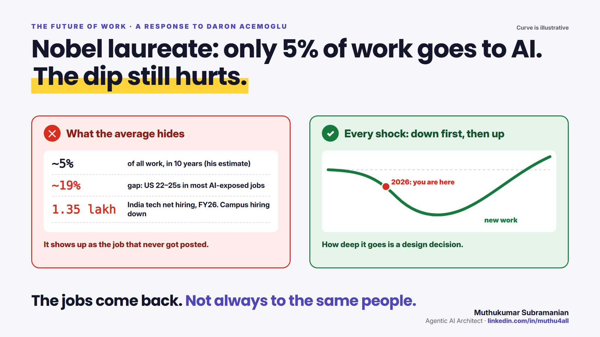

A Nobel Laureate Says AI Will Take Only 5% of Work. Here's Why the Dip Will Still Hurt.
By Muthukumar Subramanian · Agentic AI Architect

In the 1980s, bank unions in India fought the computer. The fear was simple: one machine would replace a row of clerks.
They were right about the clerks. They were wrong about everything that came after. India's tech industry alone now employs about 59.5 lakh people.
Both of those sentences are true. Most arguments about AI and jobs only use one of them.
Daron Acemoglu, who won the Nobel in economics in 2024, has just written one of the calmest essays I've read on this. He estimates that only about 5% of human work will be replaced by AI in the next ten years. Add about 1.5% to GDP over that decade, he says, and call it progress, not a revolution.
I've been in IT for 25 years, at Infosys and then as a consultant and fractional executive, across everything from legacy systems to agentic AI. I agree with most of his essay.
I just don't think "5%" is the number that should let anyone relax.
Where I agree with him
His logic is careful. Simple office and thinking tasks are roughly 20% of US work. AI could do those by the end of this decade. But firms adopt slowly, so maybe a quarter of that happens in ten years. That's where 5% comes from.
And history backs him. New York and London had power stations by 1881, yet only about half of factories and homes used electricity by the 1920s. Owners first had to redesign the factory around the motor. Economists like Paul David and Erik Brynjolfsson have shown the same thing with computers: the gains arrive late, because the real work is reorganising the company.
His sharpest point is about the last 1%. A model that's 99% accurate sounds finished. Anyone who has put an agent on a real invoice run knows that the last 1% is where the whole job lives.
Where I'd push back: 5% is an average, and nobody lives in an average
If I say the average depth of a river is three feet, you still shouldn't walk across it.
Five percent of all work isn't 5% of every job. It lands on the simple office tasks, which is exactly the first rung of the career ladder. And it mostly doesn't show up as layoffs. It shows up as the job that never got posted.
Look at what's already visible. Stanford's "Canaries" research, updated in August, finds young workers aged 22 to 25 in the most AI-exposed US jobs are about 19% below their peers in less-exposed roles. The same researchers find no economy-wide displacement. Both things are true. Here in India, Nasscom puts FY26 net hiring at about 1.35 lakh on a base of 59.5 lakh, one of the slowest years in a long time, with campus hiring down. I can't tell you how much of that is AI and how much is the economy. Nobody can yet. But if you graduated this year, the average doesn't help you.
So the question isn't "how much work goes?" It's "who stands in the gap, and for how long?"
The graph I keep drawing
Every big technology shock I've read about or lived through has the same shape. It comes down before it goes up.
👉 [GIF: C-the-dip-4-in-article-the-curve.gif]
Caption: The shape of a technology shock: old tasks fall first, new ones arrive later, and the gap between them is the dip. An illustrative shape, not a forecast.
→ 1. The shock. The technology arrives. Hype and fear both peak. Very little actually changes.
→ 2. The dip. Old tasks shrink quickly. New ones haven't been invented yet. This is where people get hurt.
→ 3. The rebuild. Companies redesign how work happens. It's slow, unglamorous and easy to miss.
→ 4. The climb. Cheaper output creates demand nobody predicted, and work appears that didn't have a name before.
Cost per unit of software is falling fast, and we've seen what follows when something gets cheap: people want far more of it. That's why I expect the climb. Every old system nobody could afford to fix becomes worth fixing. Every small business gets software it could never have paid for.
I think we're somewhere on the way down into step two. I could be wrong about how deep it goes.
We've been here before, and the honest version isn't comfortable
👉 [IMAGE: C-the-dip-2-in-article-four-shocks.png]
Caption: Four shocks. Work came back every time. It didn't always come back to the same people.
The telephone exchange is my favourite example, because the research is so honest. When US cities automated calling in the 1920s and 30s, the number of young women working as operators fell by 50 to 80%. A generation later, young women were fine: they went into typing, secretarial and restaurant work, and overall employment held. But the operators already in those seats were more likely to be in lower-paid work or out of the workforce ten years on.
The economy recovered. Those people didn't, not fully.
Indian banks tell the same story in our own language. The clerk who posted ledgers by hand had to become someone who could use a terminal, or find something else. The bank survived. The branch network grew. But that was cold comfort to anyone who'd spent years preparing for a job that quietly stopped being needed.
The ATM story is often told as a happy ending: in the US, cheaper branches meant more branches, and teller jobs held up for years. That's true, and it's also incomplete, because mobile banking came later and branch numbers have since fallen. The dip isn't one event. It keeps coming.
And after the dot-com bust, when a generation of web developers wondered what they'd done with their lives, the same skills went on to build cloud and mobile. The climb was enormous. It just didn't send anyone a calendar invite.
So what actually makes the dip shallower?
This is where Acemoglu's essay gets really useful. His main argument isn't about the 5%. It's that we're building AI towards the wrong goal. The industry is racing to make machines imitate people, when human and machine intelligence are different, and the value is in pairing them. He calls it pro-worker AI: tools that let people do things they couldn't do before.
I think that's the most practical idea in the whole debate, because the depth of the dip is a design decision. Same agent, two ways to build it.
👉 [IMAGE: C-the-dip-3-in-article-two-designs.png]
Caption: The same agent, built two ways. One removes the person. The other makes the person better.
A claims agent can replace the claims officer, or it can read the file overnight so one officer handles complex cases they could never have reached before. Ask which one you'd rather be sold, then ask what you're actually buying.
The innovation doesn't leave people. It moves to them. AI handles more of the implementation, and the scarce things become judgement, domain knowledge and knowing what's worth building. That's a very human list.
The hard parts
→ This time may be faster. Electricity needed new factories. Software agents need a login. I wouldn't bet on a 40-year runway.
→ India is unusually exposed. Much of our IT and back-office export work is the kind of task AI goes after first. Acemoglu's estimate is about US work, and I don't know a reliable number for India.
→ Retraining is easier to say than to do. A 45-year-old with a home loan can't just "reskill" on a weekend. Someone has to pay for that time.
→ Pro-worker AI has a business problem. Acemoglu points out that automation is what buyers ask for and what tech firms build. He also notes the US taxes labour above 25% and capital at close to zero, which tilts the choice. I'm not sure the market fixes this on its own.
→ The graph might not come back up. Every past shock did, and that's evidence, not proof. Anyone who tells you they're certain is selling something.
The opportunity
→ For CXOs: before you buy an agent, ask "what can my people now do that they couldn't before?" If the only answer is "fewer people", you've probably bought the smaller prize.
→ For founders: pro-worker tools are under-built, and that's a gap. A co-pilot for the claims officer, the CA or the shop-floor supervisor is a real product.
→ For IT services firms: you have lakhs of people who know how old systems really work. Forward deployed engineers (FDEs), engineers who sit with the customer's team and ship the agent on their real systems, are one route for them. AgentOps Engineer and AI Agent Manager are others. Those titles are still settling, but the work is real.
→ For colleges and government: the first rung of the ladder is the part that's breaking. Fund apprenticeships, not only degrees.
→ For you: my next piece is about exactly that: what a developer should do now.
The jobs come back. They don't always come back to the same people.
So let's stop arguing about whether the graph goes up. Let's work on how deep it goes, and who we leave at the bottom.
Your turn 👇
Where are we on this graph today: the shock, the dip, the rebuild or the climb? Pick one.
Tag someone who remembers when computers first came to their bank or office.